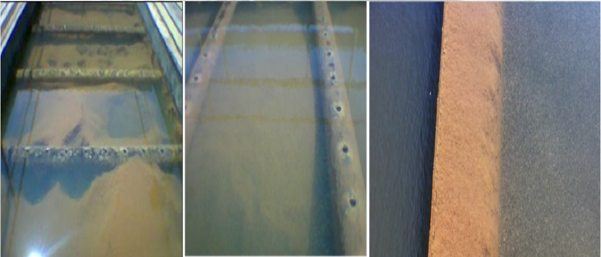
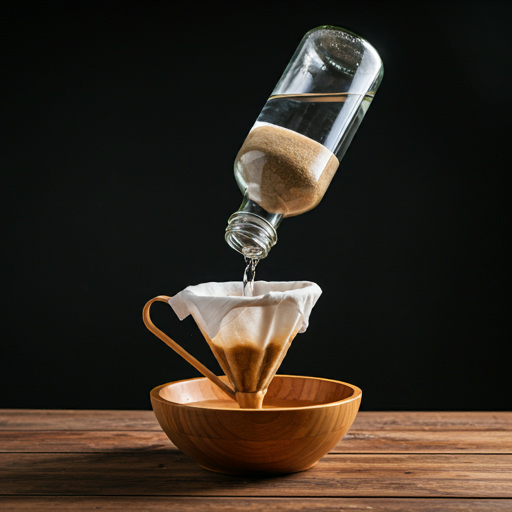
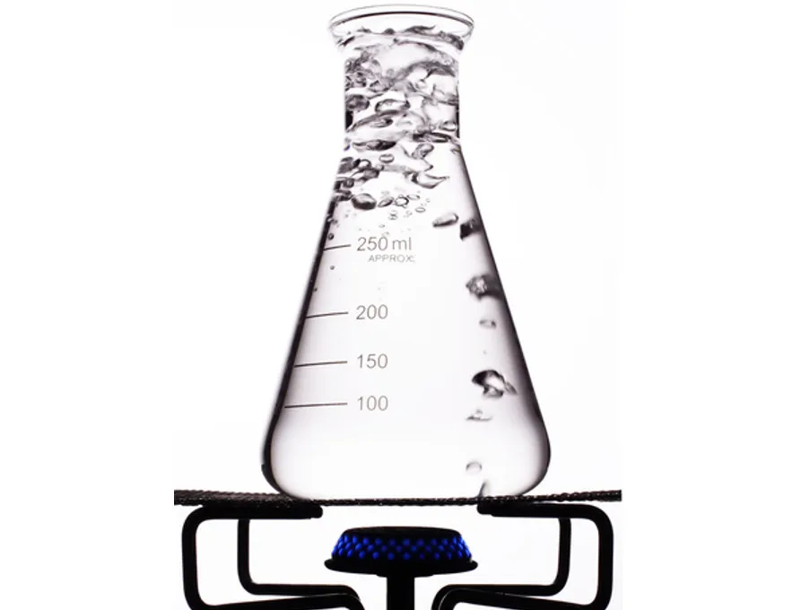

Etapas da purificação
1º-Filtração
A filtração é essencial pois ela remove as maiores particulas sólidas, como areia em flocos, graõs, materiais orgânicos e sólidos como minerais e minérios, tornando viável os próximos passos para a purificação.
Para realizar a filtração devemos escoar a água sobre alguma fibra, como algodões, roupas, panos, palha dentre outros.

2º-Floculação
A floculação não é necessária, mas melhora a qualidade final da água, para fazer ela, adicionamos "coagulantes" na água para fazer particulas menores se aglutinarem a formarem flocos que são facilmente removivéis.

3º-Decantação
A decantação é uma etapa muito importante pois ela remove a sujeira fina que passou pelo filtro, como barro, areia, sais e poeira.
Para realizar a decantação devemos deixar água parada por um tempo relativamente longo, algo como 2 dias, para que toda a sujeira possa cair até o fundo do recipiente.

4º-Filtração
Neste passo iremos filtrar novamente para remover todo o lodo obtido pela decantação, assim obtendo uma água cristalina e límpida, tornando ela mais pura.

5º-Ebulição
Para a última etapa, e uma das mais importantes, é ferver a água para eliminar qualquer microorganismo restante na água, tornando ela livre de bactérias, fungos, vírus, parasitas.

Caso todas as etapas foram concluídas com êxito, agora você possuí uma água limpa e pura, pronta para o consumo humano